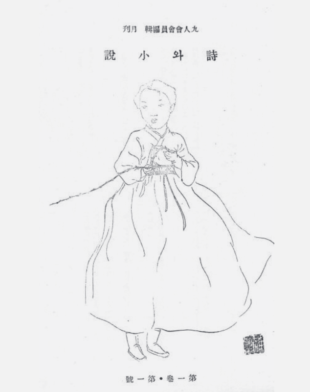

Приветствую тебя, дорогой читатель. Раз ты оказался здесь, то смею предположить, что ты заинтересован в Корейской Литературе. Этот проект преследует цель рассказать об одной конкретной литературной группе, созданной в 1933 году - Обществе Девяти, Круге Девяти или Куинхэ, а так же познакомить тебя с ее участниками, которые принадлежали к ней в тот или иной момент времени.
Куинхэ объединяет приверженцов “чистого искусства”. Участники Куинхэ пишут в разных стилях и форматах, а индентичность Куинхэ истекает из групповых характеристик каждого ее члена, но сама она никогда не облада четкой коллективной индентичностью. И тем не менее, она объединила под своим крылом значительных и влиятельных модернистких писателей своей эпохи.
Из-за уникальности этой группы, дотошно изучить ее можно только через знакомство с ее участниками, чего и желает сделать этот проект. В этом пути изучения тебя ждет увлекательное исследование загадочной библиотеки с не менее загадочными персонажами, которые будут рады рассказать тебе о Круге Девяти. Я надеюсь, что ты не заскучаешь на этом пути и получишь великолепное удовлетворение от изучения чего-то столь уникального и навсегда оставшегося в веках.
Если же у тебя пока нет сил на приключения, то ты можешь почитать отдельные статьи о Куинхэ и ее Участников на этом сайте.
